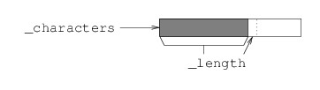

In this section, we will examine some of the implementation details of the StringBuilder class. There are several reasons for doing this. First, by examining these details, we can begin to understand why a StringBuilder is so much more efficient than a string when it comes to building long strings a character at a time. Second, by studying implementations of data structures, we can learn techniques that might be useful to us if we need to build our own data structures. Finally, a computing professional who better understands the underlying software will be better equipped to use that software effectively.
In what follows, we will develop an implementation of a simplified StringBuilder class. Specifically, we will only implement enough to support the program that flips the case of all characters in a string (see the previous section). Most other features of a StringBuilder have a rather straightforward implementation once the basics are done (we will show how to implement an indexer in a later section).
Note
The implementation described here is much simpler than the actual implementation in the .NET Framework. Their implementation achieves even better performance.
In order to illustrate more clearly the techniques used to implement a StringBuilder, we will present an implementation that uses only those types provided by the C# core language, rather than those found in a library such as the .NET Framework. One of the more useful data structures that the C# core language provides for building more advanced data structures is the array. We can represent the characters in a StringBuilder using a char[ ]. One difficulty in using an array, however, is that we don’t know how many characters our StringBuilder might need. We will return to this issue shortly, but for now, let’s just arbitrarily pick a size for our array, and define:
/// <summary>
/// The characters in this StringBuilder.
/// </summary>
private char[] _characters = new char[100];
An array with 100 elements will give us room enough to store up to 100 characters. In fact, initializing the array in this way actually gives us 100 characters, as each array element is initialized to a Unicode NULL character (a char with a decimal value of 0). Because char is a value type, each array element is going to store a char - it’s just a question of which char it is going to store. Therefore, if we want to be able to represent a sequence of fewer than 100 characters, we need an additional field to keep track of how many characters of the array actually represent characters in the StringBuilder. We therefore define:
/// <summary>
/// The number of characters in this StringBuilder.
/// </summary>
private int _length = 0;
Thus, for example, if _length is 25, the first 25 characters in
_characters will be the characters in the StringBuilder.
Because both fields have initializers, the default constructor will initialize them both; hence, we don’t need to write a constructor. Let’s focus instead on the Append method. This method needs to take a char as its only parameter and return a StringBuilder (itself). Its effect needs to be to add the given char to the end of the sequence of characters in the StringBuilder.
In order to see how this can be done, consider how our fields together represent the sequence of characters:

Within the array referred to by _characters, the first _length
locations (i.e., locations 0 through _length - 1) store the
characters in the StringBuilder. This means that
_characters[_length] is the next available location, provided this is
a valid array location. In this case, we can simply place the char
to be appended in _characters[_length], increment _length (because
the number of characters in the StringBuilder has increased by 1),
and return the StringBuilder.
However, what if we are already using all of the array locations for
characters in the StringBuilder? In this case, _length is the
length of the array, and therefore is not a valid array location. In
order to handle this case, we need to make more room. The only way to do
this to construct a new, larger array, and copy all of the characters
into it. We will then make _characters refer to the new array. (The
.NET Framework actually provides a method to do all this, but in order
to show the details of what is happening, we will not use it.) Now that
there is enough room, we can append the new character as above. The code
is as follows:
/// <summary>
/// Appends the given character to the end of this StringBuilder.
/// </summary>
/// <param name="c">The character to append.</param>
/// <returns>This StringBuilder.</returns>
public StringBuilder Append(char c)
{
if (_length == _characters.Length)
{
char[] chars = new char[2 * _length];
_characters.CopyTo(chars, 0);
_characters = chars;
}
_characters[_length] = c;
_length++;
return this;
}
A few comments on the above code are in order. First, when we need a new array, we allocate one of twice the size as the original array. We do this for a couple of reasons. First, notice that copying every character from one array to another is expensive if there are a lot of characters. For this reason, we don’t want to do it very often. By doubling the size of the array every time we run out of room, we increase the size by enough that it will be a while before we need to do it again. On the other hand, doubling the array doesn’t waste too much space if we don’t need to fill it entirely.
The
CopyTo
method used above copies all of the elements in the array to which this
method belongs (in this case, _characters) to the array given by the
first parameter (chars in this case), placing them beginning at the
location given by the second parameter (0 in this case). Thus, we are
copying all the elements of _characters to chars, placing them
beginning at location 0.
The last statement within the if block assigns the reference stored
in chars to _characters; i.e., it makes _characters refer to the
same array as does chars. The last statement in the method returns the
StringBuilder whose Append method was called.
To complete this simple implementation, we need to provide a ToString method. This method is already defined for every object; hence, StringBuilder inherits this definition by default. However, the ToString method defined for objects doesn’t give us the string we want. Fortunately, though, this method is a virtual method, meaning that we can re-define by overriding it. We do this by using the keyword, override, in its definition. Visual Studio®'s auto-complete feature is helpful here, as when we type the word override, it presents us with a list of the methods that can be overridden. Selecting ToString from this list will fill in a template for the method with a correct parameter list and return type.
We want this method to return the string formed from the first
_length characters in _characters. We can form such a string using
one of the string
constructors.
This constructor takes three parameters:
We can therefore define the ToString method as follows:
/// <summary>
/// Converts this StringBuilder to a string.
/// </summary>
/// <returns>The string equivalent of this StringBuilder.</returns>
public override string ToString()
{
return new string(_characters, 0, _length);
}
You can obtain a program containing the complete class definition by creating a Git repository (see “Git Repositories”) using this URL. This program is a modification of the program used in the previous section to compare the performance differences between using strings or StringBuilders when building strings a character at a time. Its only modification is to use this StringBuilder class, defined within a class library, instead of the class defined in the .NET Framework. By running the program on long strings, you can verify that the performance of this StringBuilder class is comparable to that of the StringBuilder in the .NET Framework.
Now that we have the details of a StringBuilder implementation, we can begin to see why it is so much more efficient to build a string a character at a time using a StringBuilder, as opposed to using a string. As we have noted, allocating a new array and copying all characters to it is expensive; however, we have tried to reduce the number of times this is done. To see how this is accomplished, suppose we are building a string of 100,000 characters. The first time we need a larger array, we will copy 100 characters to a 200-element array. The next time, we will copy 200 characters to a 400-element array. This will continue until we copy 51,200 characters to a 102,400-element array, which is large enough to hold all of the characters. If we add up all of the character copies we have done when allocating new arrays, we find that there are a total of 102,300 copies. In addition, each time we call Append, we copy the char parameter to the array. This is another 100,000 copies. Finally, the ToString method must copy all of the characters to the string it is constructing. This is another 100,000 character copies, for a total of 302,300 copies. In general, the number of character copies will always be less than 4n, where n is the length of the string being built.